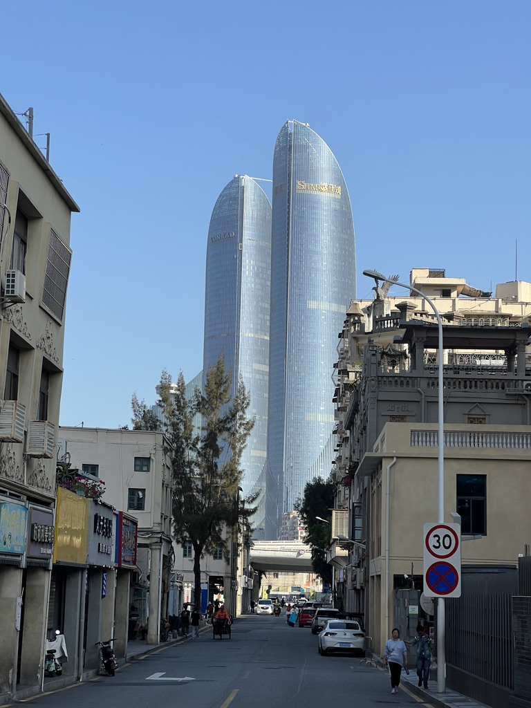

这么好的天，为什么要被困住？
厦门终于等来了适合出门的好天气，我却差点被求职的焦虑困住。生活，或许不必总等到下一道坎之后才开始。
2026年11月1日，星期日，厦门。
今天中午，下楼吃饭。走出楼道的一瞬间，突然被眼前的蓝天吸引住了。天空很蓝，阳光很好。一阵微风吹来，已经没有了夏天黏腻的燥热，太阳也不再毒辣。厦门漫长的夏天似乎要结束了。
这样的天气，让我想起了今年春天。

来厦门读研之后，研一的周末，我几乎没有出门玩过。那时候的周末，大多是在宿舍里度过的：睡个懒觉，打打游戏，刷刷短视频，偶尔出去吃点好的，就算是休息了。明明什么也没干，一天下来却还是觉得很累，并没有想象中那种放松的感觉。
厦门是一座很适合出门的城市。这里有海，有山，有蓝天，有晚霞。尤其是春天和秋天，气温刚刚好，阳光也刚刚好。研一的时候，我却很少认真享受这些。直到研二，实验室来了一个师弟。一次偶然的机会，我们在周末一起出了门。也没有什么特别的计划，只是觉得天气不错，应该出去晒晒太阳。没想到，就是这样一次普普通通的出门，让我们喜欢上了周末出去玩的感觉。
后来，我们几乎每隔一两个周末就会出去一次。有时候去海边，有时候去山里；有时候是白城沙滩，有时候是山海步道。其实去哪里并不重要，重要的是走出宿舍，走出学校，看看海，吹吹风，晒晒太阳。那种快乐，和在宿舍里打游戏、刷短视频带来的快乐完全不一样。在宿舍里，一个视频接着一个视频，一局游戏接着一局游戏，玩的时候确实挺开心，但等到夜里放下手机，回想这一天，又总觉得有些空虚。但出门玩不一样，哪怕只是去海边坐一下午，什么事也不做，回来的时候却总有一种酣畅淋漓的感觉。身体可能有些疲惫，精神却是轻松的。尤其是离开学校之后，好像平时脑子里那些乱七八糟的事情，也暂时不用去想了。
原来，休息也不一定非得待在宿舍里什么都不做。有时候出去走走，反而更能放松下来。
可是，厦门的夏天总是来得很早，走得很晚。大概从六月开始，外面的太阳就已经大到让人失去出门的欲望。于是，我们渐渐停止了周末的出游。六月、七月、八月、九月、十月，一晃就是好几个月。直到今天，11月1日。走出楼道，看到久违的、适合出门的天气，我立刻想起了春天那些周末。那时候，我们总会在群里商量，这周去哪儿玩？去海边，还是去爬山？突然就很想喊上大家，再出去走一走。
可是，当我拿起手机准备发消息的时候，却犹豫了。
好像还有几个AI面试没做，还有几份测评没有完成。秋招已经到了这个阶段，大家口中的“金九银十”也结束了，可工作的事情依然没有着落。接下来该怎么办？还有哪些岗位可以投？面试要怎么准备？要是最后找不到满意的工作呢？这些念头一下子涌了上来。最近一段时间，我似乎经常处于这样的状态。白天想着求职的事情，晚上躺在床上，脑子里也总有些事情放不下。有时候明明已经很累了，却还是睡不着。就这样，刚才看到蓝天时那种想出门的兴奋，突然被焦虑取代了。
恍惚间，我觉得现在的自己和年初的自己，已经不像是同一个人了。年初的时候，周末最大的烦恼可能只是去哪里玩。看到天气好，第一反应是赶紧出门，生怕浪费了这样的好天气。而现在，看到同样的蓝天，第一反应却是：我还有那么多事情没有做，真的有资格出去玩吗？ 甚至开始担心，就算真的出了门，自己也未必还能像春天那样放松。毕竟，找工作的事情不可能因为我离开学校就暂时不存在了。
突然想到，其实这么多年来，我好像一直都是这样过来的。初中的时候，总觉得考上高中就好了；高中的时候，总觉得考上大学就好了；上了大学，又觉得考上研究生就好了。如今，终于读上了研究生，也算是完成了过去很多年给自己设定的目标。可是，然后呢？新的目标又来了：找到工作就好了。
我想，如果以后真的找到了一份满意的工作，或许又会开始为别的事情发愁。刚工作的时候，想着什么时候能稳定下来；稳定下来之后，想着什么时候能买房、结婚；结了婚，又要考虑孩子；有了孩子，要想着孩子上学；孩子长大了，要想着孩子工作、结婚、生子……然后，又开始操心下一代。这样想下去，似乎永远没有尽头。
突然觉得，我们的一生好像一直都在追赶某个目标。每当完成一个目标，还没来得及好好庆祝，新的目标就已经出现在前方。就像那根吊在驴子面前的胡萝卜，驴子一直往前走，以为再走几步就能够吃到它，却不知道胡萝卜也一直在往前移动。仔细想想，过去的自己，好像也是这样。每一个阶段，我都真切地相信，只要跨过眼前的这道坎，生活就会变得轻松一些。可事实是，我确实跨过了一道又一道坎，却好像从来没有真正等到过那个可以安心休息的时候。
也许人生本来就不存在这样一个时候。
以前总觉得，努力是为了将来能过上自己想要的生活。可是，如果我们总是为了将来而努力，总是把眼前的生活推迟到“等这件事结束以后”，那我们究竟要等到什么时候，才能真正开始生活呢？等考完试，等毕业，等找到工作，等攒够钱，等一切都稳定下来……可是生活真的会有“一切都稳定下来”的那一天吗？
我不知道。
我又抬头看了看天空。还是那么蓝，风还是轻轻地吹着，阳光洒在身上，暖洋洋的。突然觉得有些好笑，前几个月不出门，是因为厦门的夏天实在太热。现在好不容易等到了适合出门的天气，我却又给自己找到了新的理由。那时候，是天气把我困在了宿舍里；而现在，好像是我自己把自己困住了。被没有完成的事情困住，被对未来的担忧困住，被那些一个接着一个的人生目标困住。甚至还没有真正开始工作，就已经提前为未来的生活焦虑起来了。
最后，我还是拿起手机，约上了朋友们。
我还是出去玩了。
工作的事情，回来再继续准备吧。至于那些暂时没有答案的问题，也只能慢慢来。
毕竟，今天是11月1日，星期日。厦门的天空很蓝，风也刚刚好。
这么好的天，为什么要被困住呢？